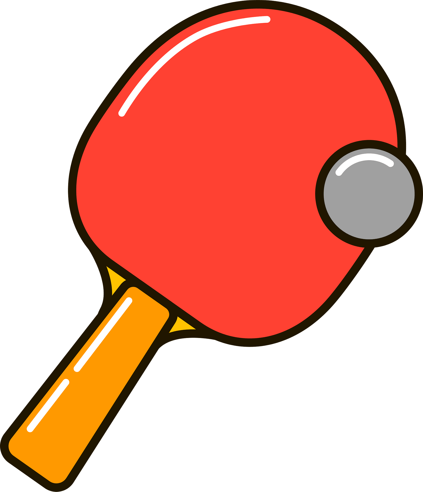
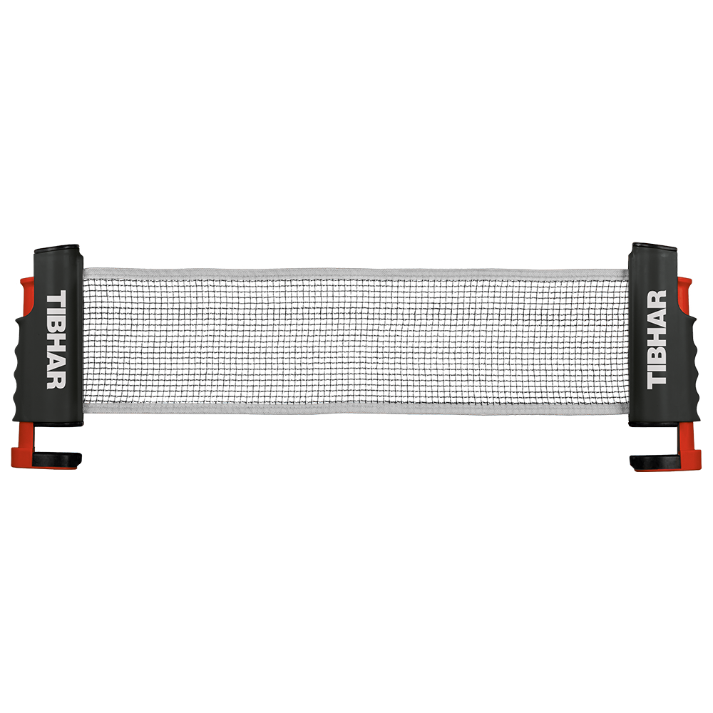

Namizni tenis
Meni je namizni tenis postal zelo všeč in ker ga veliko ljudi ne pozna Vam ga bom predstavil.
- Fan Zhendong
- Ma Long
- LIANG jingkun
- Truls Moregard
- Hugo Calderano
- Lin-Yun-Ju
- Darko Jorgič
- Tomokazu Harimoto
- Dimitrij Ovtcharov
Prvi na lestvici je Fan Zhendong, ki se bori za prvo mesto,ker mu je Ma long zelo blizu igralec na svetu. Imamo pa tudi 3 slovenske igralce, in to so.
- Darko Jorgič
- Bojan Tokič
- Deni Kožul
To leto se je Darko uvrstil med top 10 Danes je sedmi!

Na levi pa je še slika in če klikneš nanjo te vrže na igre

